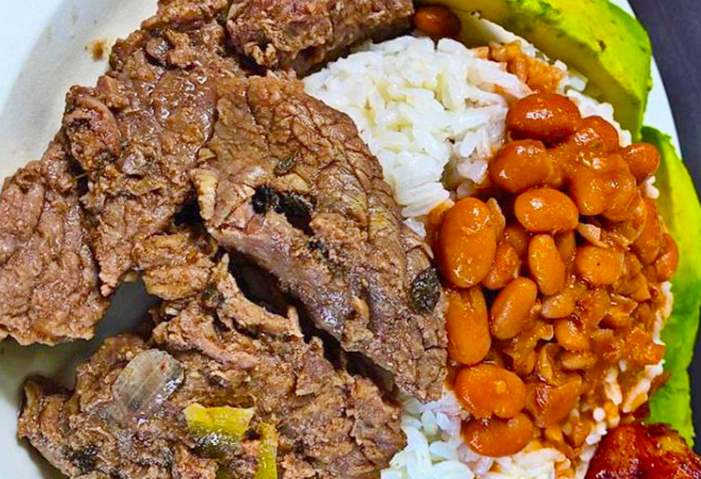

By Paola Garcia | September 23, 2019
The Dominican Republic is widely known for its beautiful weather, beaches, people, merengue music and professional baseball players. However, something that we don't get enough credit for is our wonderful cuisine. I hope to change some of that with this blog. Our food is just as big a part of our culture as the others. I am now going to share with you six of my favorite Dominican style meals. I sincerely recommend that you try some or all of these delectable dishes on your next visit to the Dominican Republic. Trust me, you won't be disappointed in any of my culinary choices.
Chimichurri
Chimichurri, or Chimi for short, is a tasty Dominican style hamburger served with cabbage, onions, sliced cheese, tomatoes and a special zesty sauce that adds even more flavor. Chimis are one of my food truck favorites. I regularly get a couple and some tostónes (Dominican fries) whenever I visit one of our beaches.
La Bandera
 La Bandera, which means "The Flag", is the number one dish of the Dominican Republic. Served with a combination of beans, rice, a meat of choice (usually a baked pork chop), and a salad, this hearty Dominican favorite will leave your stomach feeling both full and satisfied.
Mangú
 Mangú is Dominican slang for "man this is good". It is a popular staple of breakfast in the Dominican Republic. Mangú is mashed plantains topped with red onions and served with salami. I like to eat my Mangú with either an egg, french toast or both.
Mangú is Dominican slang for "man this is good". It is a popular staple of breakfast in the Dominican Republic. Mangú is mashed plantains topped with red onions and served with salami. I like to eat my Mangú with either an egg, french toast or both.
Mofongo
 Mofongo is a savory seasoned mashed plantain made into a large ball. I love Mofongo because of its taste and versatility as a dish. Mofongo is great served either by itself or in combination as part of a larger meal. I usually eat mine with some dipping soup, a salad or a piece of meat.
Mofongo is a savory seasoned mashed plantain made into a large ball. I love Mofongo because of its taste and versatility as a dish. Mofongo is great served either by itself or in combination as part of a larger meal. I usually eat mine with some dipping soup, a salad or a piece of meat.
Pescado Frito
You have not had fried fish until you've had some of our Pescado Frito. This mouth-watering fish is my absolute favorite. I simply love devouring Pescado Frito served crispy, hot and fresh on the spot. I could eat this almost every other day. I highly recommend whether you are a seafood lover or not that you try some of this.
Sancocho
If you are looking to try a really good stew then you must have some of our Sancocho. Sancocho is a highly fulfilling, tasty Dominican stew made up of humongous chunks of chicken, corn, mixed vegetables, and potatoes. Sometimes it's prepared with large chunks of beef instead of the commonly used chicken. The highly popular Sancocho is recognized as one of the Dominican Republic's national dishes.
*Bizcocho Dominicano
As a bonus, I thought I would throw in one of my favorite Dominican desserts, Bizcocho Dominicano. Bizcocho Dominicano is a moist, delicious yellow cake made with meringue frosting and pineapple filling in the center. It is the standard cake for weddings, birthdays, special occasions, and other celebrations.
Thanks for reading. Until next time. Besos!